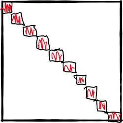

Linear Solver
As mentioned before, a linear solver is required to compute the Newton step in
dx .= jacobian(x)\f(x)Our package supports the following linear solvers:
- CUSOLVER with
csrlsvqr(GPU), Krylov.jlwithdqgmres(CPU/GPU),IterativeSolvers.jlwithbicgstab(CPU),- UMFPACK through the default Julia
\operator (CPU), - and a generic BiCGSTAB implementation [Vorst1992] (CPU/GPU).
The last custom implementation was necessary as BiCGSTAB showed much better performance than GMRES and at the time of this writing both Krylov.jl and IterativeSolvers.jl did not provide an implementation that supported CUDA.jl.
Using only an iterative solver lead to divergence and bad performance due to ill-conditioning of the Jacobian. This is a known phenomenon in power systems. That's why this package comes with a block Jacobi preconditioner that is tailored towards GPUs and is proven to work well with power flow problems.
The Jacobian is partitioned into a dense block diagonal structure, where each block is inverted to build our preconditioner P. For the partition we use Metis.jl.

Compared to incomplete Cholesky and incomplete LU this preconditioner is easily portable to the GPU if the number of blocks is high enough. ExaPF.jl uses the batch BLAS calls from CUBLAS to invert the single blocks.
CUDA.@sync pivot, info = CUDA.CUBLAS.getrf_batched!(blocks, true)
CUDA.@sync pivot, info, p.cuJs = CUDA.CUBLAS.getri_batched(blocks, pivot)Assuming that other vendors will provide such batched BLAS APIs, this code is portable to other GPU architectures.
Description
ExaPF.Precondition.AbstractPreconditioner — TypeAbstractPreconditionerPreconditioners for the iterative solvers mostly focused on GPUs
API Reference
ExaPF.Precondition.Preconditioner — TypePreconditionerCreates an object for the block-Jacobi preconditioner
npart::Int64: Number of partitions or blocksnJs::Int64: Size of the blocks. For the GPUs these all have to be of equal size.partitions::Vector{Vector{Int64}}:npart` partitions stored as listscupartitions:partitionstransfered to the GPUJs: Dense blocks of the block-JacobicuJs:Jstransfered to the GPUmap: The partitions as a mapping to construct viewscumap:cumaptransferred to the GPU`part: Partitioning as output by Metiscupart:parttransferred to the GPUP: The sparse precondition matrix whose values are updated at each iteration
ExaPF.Precondition.update — Functionfunction update(J::CuSparseMatrixCSR, p, to)Update the preconditioner p from the sparse Jacobian J in CSR format for the GPU
- The dense blocks
cuJsare filled from the sparse JacobianJ - To a batch inversion of the dense blocks using CUBLAS
- Extract the preconditioner matrix
p.Pfrom the dense blockscuJs
function update(J::CuSparseMatrixCSR, p, to)Update the preconditioner p from the sparse Jacobian J in CSC format for the CPU
Note that this implements the same algorithm as for the GPU and becomes very slow on CPU with growing number of blocks.
ExaPF.Precondition.build_adjmatrix — Functionbuild_adjmatrixBuild the adjacency matrix of a matrix A corresponding to the undirected graph
ExaPF.Precondition.fillblock_gpu! — Functionfillblock_gpuFill the dense blocks of the preconditioner from the sparse CSC matrix arrays
ExaPF.Precondition.fillP_gpu! — Functionfillblock_gpuUpdate the values of the preconditioner matrix from the dense Jacobi blocks
- Vorst1992Vorst, H. A. van der. 1992. “Bi-Cgstab: A Fast and Smoothly ConvergingVariant of Bi-Cg for the Solution of Nonsymmetric Linear Systems.”SIAMJournal on Scientific and Statistical Computing13 (2): 631–44